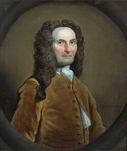

1667-1754
Abraham de Moivre

Portrait: Joseph Highmore, Public domain, Wikimedia Commons.
Events (10)
- 1657Probability from games of chance
developer · Probability
- 1662Graunt: life tables
systematiser · Statistics & decision theory
- 1663Cardano: first treatise on chance (Liber de ludo aleae)
developer · Probability
- 1702Trigonometry and the exponential: Cotes, De Moivre, Euler
developer · Analysis
- 1707De Moivre: probability and the trigonometry-complex number link
developer · Probability
- 1713Bernoulli's Ars Conjectandi and the law of large numbers
developer · Probability
- 1722De Moivre's formula: trigonometry and complex powers
developer · Analysis
- 1733De Moivre: normal approximation to the binomial
originator · Probability
- 1764Bayes' inverse probability
developer · Statistics & decision theory
- 1782Laplace's analytic probability
developer · Probability